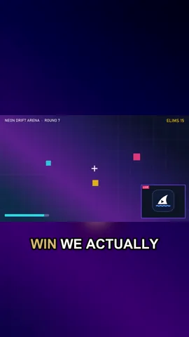
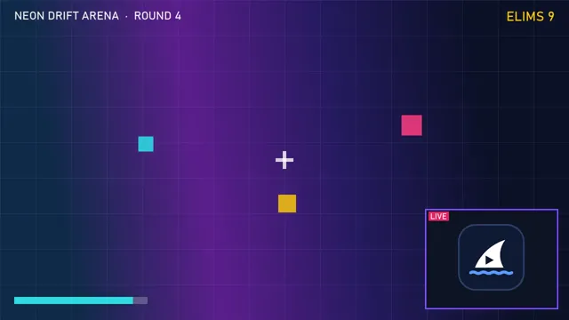
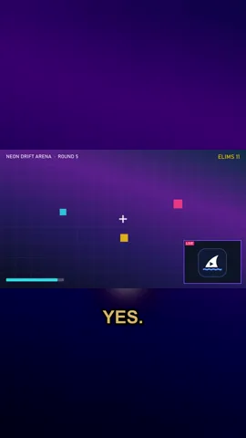

Works with Kickand Twitch, YouTube or any video file
Your stream in, ready-to-post clips out.
SharkyClips finds the best moments in your stream recording and turns them into vertical clips for YouTube Shorts, TikTok and Instagram Reels. It all runs on your own PC.
- 100% free
- No watermark
- No limits
- Runs on your PC
Real results
Each pair shows a moment in the long stream and the same moment in the clip SharkyClips made from it by itself: cut, turned to 9:16, with subtitles and a title.
 Stream · 4:39
Stream · 4:39 Finished clip
Finished clipOne grenade, triple kill! What did I see? 🤯Picked for a loud reaction, a chat explosion (14 times more messages) and "what the hell". Score 93.  Stream · 1:11
Stream · 1:11 Finished clip
Finished clipOne versus three? I pulled off a CLUTCH! 😱A 1 vs 3 comeback: a loud voice, the chat 12 times faster, "no way" and "clutch". Score 78.  Stream · 5:28
Stream · 5:28
Finished clipDid that last throw really just win the game?The winning moment: a short silence, then shouting, and "let's go". Score 85.  Stream · 0:21
Stream · 0:21 Finished clip
Finished clipDid you really see that double elimination happen?A double kill: "oh my god", a loud reaction and the chat 11 times faster. Score 82. 
Stream · 2:53 Finished clip
Finished clipZero armor, reckless run, barely alive! 😱A panic run from the boss. The swear word is bleeped and hidden in the subtitles. Score 64.  Stream · 3:51
Stream · 3:51
Finished clipPracticed all week, then finally landed itA jump practised all week: "yes!" and "LETS GOOO" in the chat. Score 75.
Made from our demo stream (a drawn game, a computer voice and a generated chat), so no real person, game or channel is shown. Nothing was edited by hand.
How it works
Three steps. SharkyClips does the editing work in between.
Add your stream
Drop a video file, or paste a Twitch, YouTube or Kick link. SharkyClips can also take the newest recording from your OBS folder.
SharkyClips makes the clips
It finds the loud, funny and exciting moments, cuts them cleanly, adds subtitles, bleeps swear words and writes titles.
Check and share
Watch the clips, change what you like, and share them to YouTube Shorts, TikTok and Instagram Reels.


Made for streamers
Finds the moments
Loud reactions, laughter, chat explosions and in-game events become one ranked list of clips.
Bleeps, checked
Swear words are bleeped in 11 languages, and every finished clip is listened to again.
One Share button
YouTube Shorts, TikTok and Instagram Reels, with the right caption and limits for each.
TikTok helperNew
A small browser extension for Edge, Chrome, Opera and Brave fills in your TikTok upload. You check it and click Post yourself.
Photo slideshowNew
Turn 2 to 20 photos into a vertical before-and-after video with labels and music.
Themes and coloursNew
Four colour themes for the app (Classic, Ocean, Shark Sign, High contrast), dark or light, and your own accent colour.
How SharkyClips compares
Facts from each product's official website, checked on 28 November 2026. Prices are in US dollars, without tax. Plans change, so check their pages before you decide.
| Feature | SharkyClips | Eklipse | OpusClip | StreamLadder |
|---|---|---|---|---|
| Price | Free (open source, MIT license) | A free trial; Premium from $24.99 a month or $179.99 a year | Free plan; paid plans from $15 a month | Free plan; paid plans from $15 a month or $150 a year |
| Watermark | Never | On free exports | On the free plan | Only when a free clip uses paid features |
| Clip limits | None | Free: preview the clips of a recent stream; Premium: unlimited AI clipping | Free: 60 processing minutes a month, files kept for 3 days | No minute limits; AI clipping of whole streams from the Creator plan ($27 a month); free exports in 720p |
| Where your video is processed | On your PC: nothing is uploaded | Online: their AI editing runs in the cloud | Online: you upload a file or paste a link | Online: you upload a file or paste a link |
| What you need | A Windows 10 or 11 PC with 8 GB RAM (macOS: less tested) | A browser and an account | A browser and an account | A browser and an account |
| Game-aware detection | Reads the game screen in Delta Force and League of Legends; other games through voice, sound and chat | More than 3,000 games, tuned for each game category | Not stated | Not stated |
| Kick | Kick videos with their chat replay | Imports Kick streams | Kick links are supported | Kick clips on the free plan; whole Kick streams from the Creator plan |
| Swear-word bleeping | Automatic in 11 languages, and every clip is checked again | Not stated | From the Pro plan ($29 a month) | Automatic word censoring (plan not clearly stated) |
| Languages | 11 (app, speech recognition and subtitles) | Not stated for captions; voice commands in English | More than 25 for captions | More than 90 for captions |
"Not stated" means we did not find it on their official pages. Is something wrong or out of date? Tell us on the contact page and we will fix it.
Sources (14 official pages)
- eklipse.gg
- eklipse.gg/help/how-much-does-eklipse-premium-cost
- eklipse.gg/help/what-are-the-main-differences-between-the-free-and-premium-plans
- eklipse.gg/help/will-my-exported-video-have-a-watermark
- eklipse.gg/help/import-kick-streams-to-eklipse
- eklipse.gg/features/ai-edit
- opus.pro/pricing
- help.opus.pro/docs/article/plans-and-credits.md
- help.opus.pro/docs/article/video-sources-supported.md
- help.opus.pro/docs/article/video-languages-supported.md
- streamladder.com/pricing
- streamladder.com/clipgpt/import-from-kick
- streamladder.com/clip-editor/word-censoring
- streamladder.com/clip-editor/captions
How SharkyClips uses YouTube
Connecting YouTube is optional. If you connect it, SharkyClips uses the official YouTube API Services only to upload and manage the clips you choose and to show you their results. Your YouTube data stays on your computer.
Show the permissions and how your YouTube data is used
Uploading to YouTube is optional. If you connect your channel in Settings → YouTube, SharkyClips uses the official YouTube API Services to do exactly these things, and only when you ask for them:
| Action | Permission (scope) | When |
|---|---|---|
| Upload a clip you set up (title, description, tags, privacy, release time, playlist, thumbnail); change its details or release time, publish it early or delete it when you cancel it before it is public; show which channel is connected; read the views, likes and privacy status of videos uploaded with SharkyClips | youtube | When you press Publish now or schedule a clip (uploaded in advance while your PC is on), edit or cancel it in the Library, open Settings, and about every 6 hours while the app runs |
| Read the average view percentage of those same videos, to learn which opening (hook) style keeps your viewers watching | yt-analytics.readonly | Only for clips uploaded as part of a hook test, once they have been public for 48 hours |
This data is stored only on your computer and is used only to show you your results and to improve the clip scores for your channel. SharkyClips has no server: the developers never receive, see or share your YouTube data, and nothing is used for ads. SharkyClips never reads other people's channels, your comments, your subscribers or your watch history. It only changes or deletes videos that were uploaded with SharkyClips, and only when you ask (for example when you edit or cancel a scheduled clip).
You can disconnect at any time in Settings → YouTube (this revokes the access token at Google), or remove the access in your Google account permissions. By connecting you agree to the YouTube Terms of Service; Google handles your data under the Google Privacy Policy. Read our full privacy policy and terms of use.
Free, open source, private
SharkyClips is MIT-licensed: no subscription, no credits, no watermark. There is no account and no tracking, and your videos stay on your PC unless you share them. The source code and every release are on GitHub.